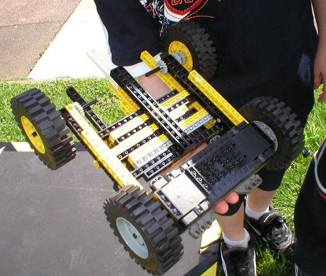

First |
Previous Picture |
Next Picture |
Last | Thumbnails
This is a close up of the bottom of the Leog Technic Robot made by Danny & Gabriel for the Sumo Challenge. It might be able to run both ways up. You can see the construction of the forks - a weapon and bumper - is not too solid. They fell off almost the first time they hit something. Danny and Gabriel did try to mirror Dale & Janaks bumpers along the entire length of the robot. But they didnt really use enough pins - and the big chunk was only stuck down on the top of the long side panels - with one extra beam on top. It came off rather easily.
